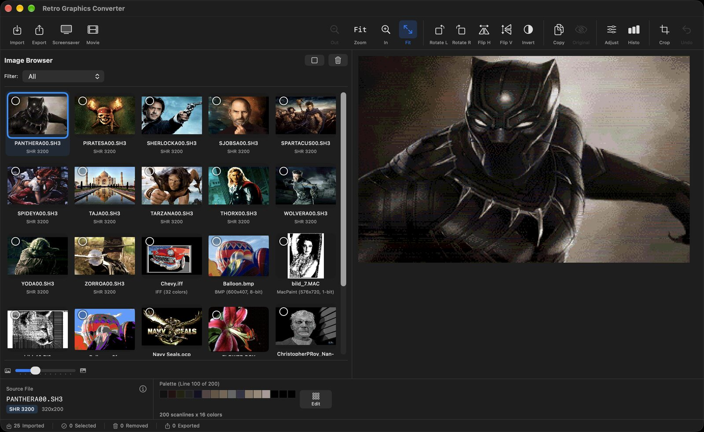
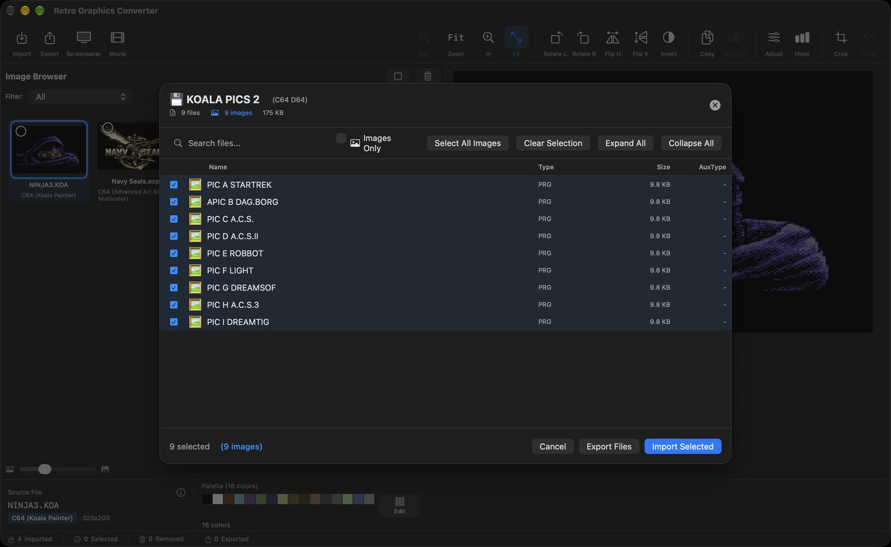
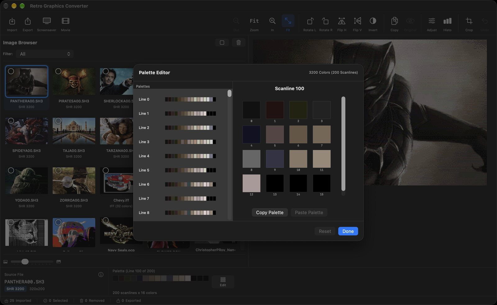
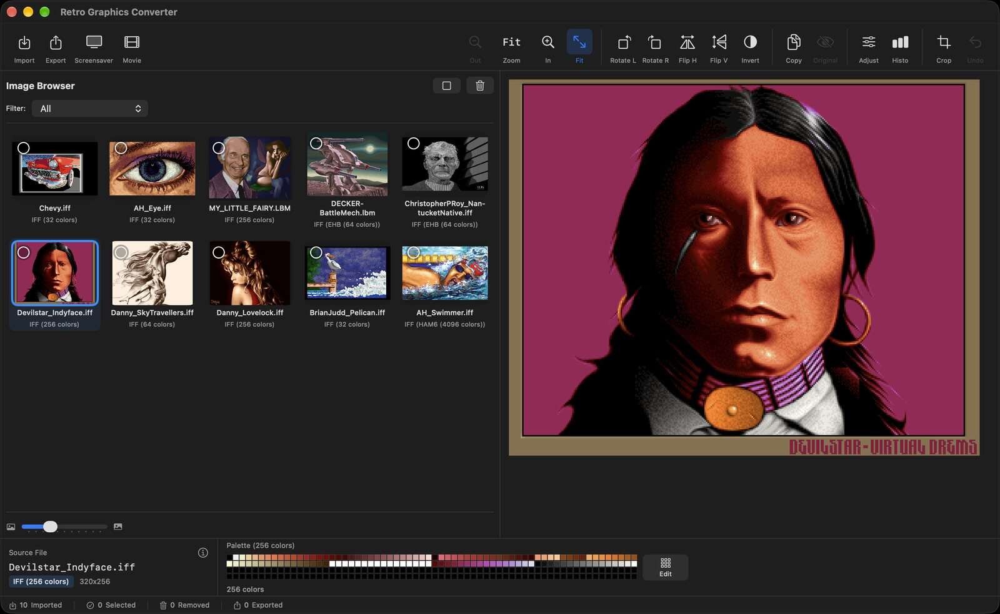
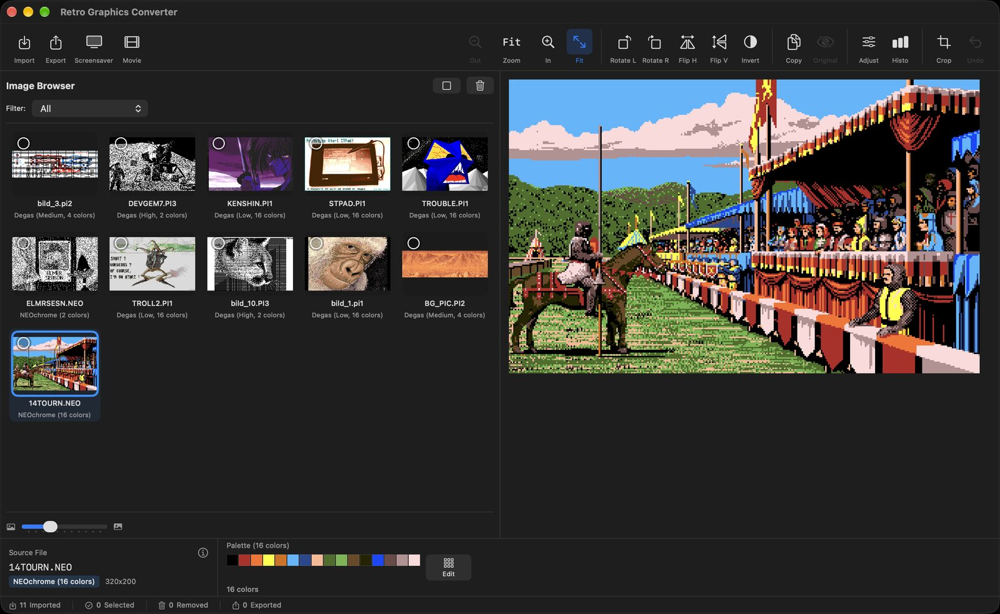
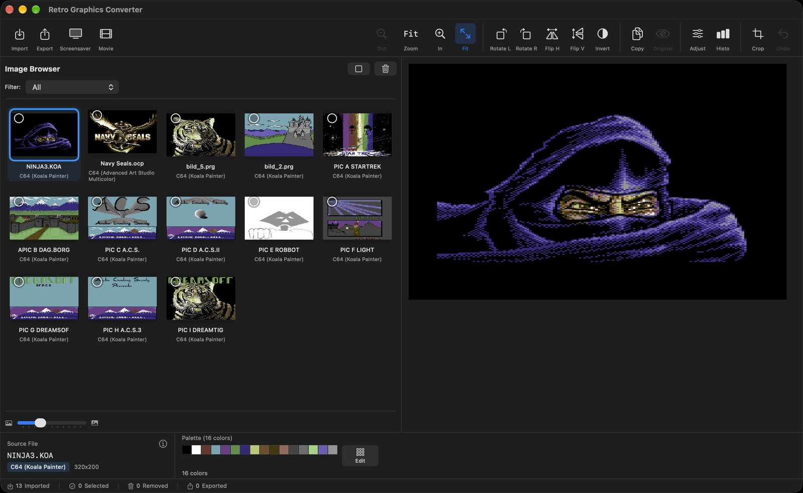
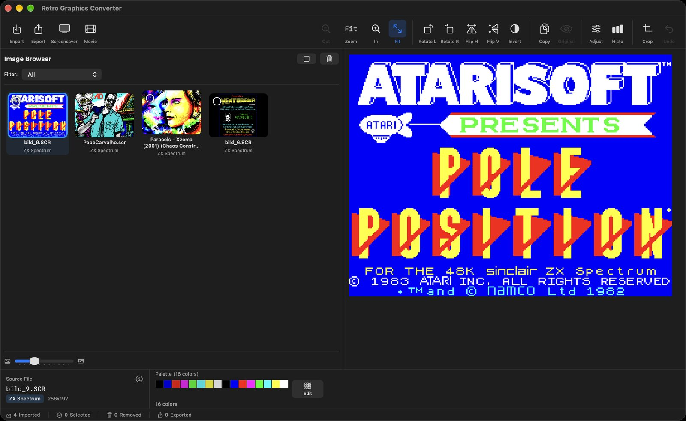
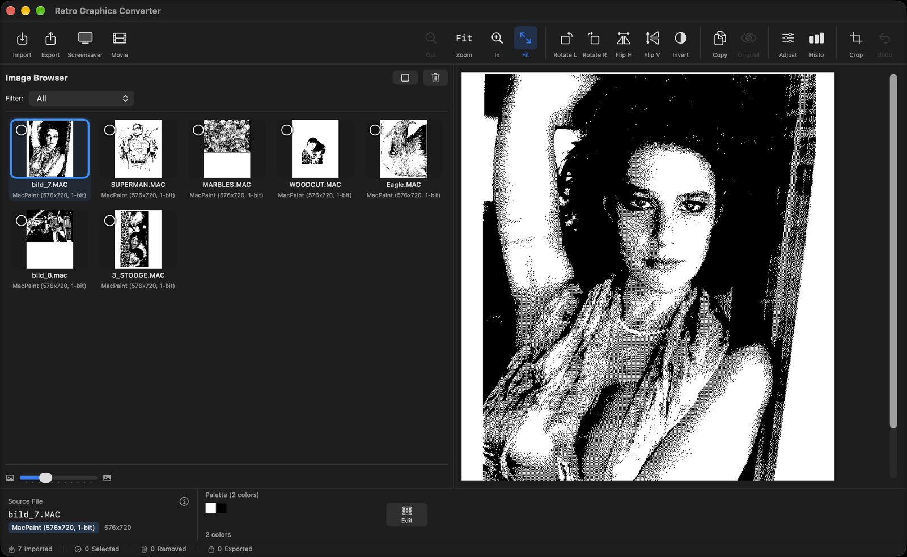
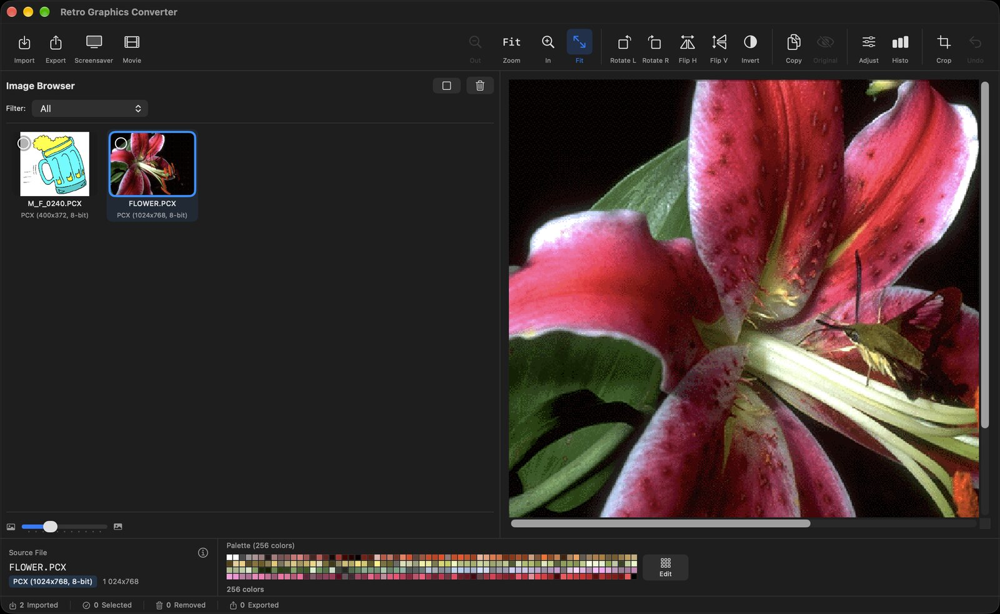

View, edit and convert the graphics of 16 classic computers on your Mac - straight from their files or from original disk images.
macOS 15.6+ Version 4.5
A big quality update: every decoder and disk reader was checked against thousands of real disk images and sample pictures.
Real pictures from real disks, decoded the way the original hardware showed them.








Everything you need to explore, preserve and share vintage computer art.
Open 15 disk image formats from Apple II, Commodore, Amiga, Atari, BBC, ZX Spectrum, Amstrad, MSX and CoCo. Search, tick and import, or export the raw files.
Edit the original colors with live preview, copy and paste palettes, compare with the original - up to 3200-color pictures.
Formats are recognized by their structure, not only by name - pictures hidden in files without extension are found too.
PNG, JPEG, TIFF, GIF or HEIC, or keep the original file. Upscale 2x, 4x or 8x with crisp pixels. Batch export never overwrites files.
Turn your collection into a macOS screensaver with pixel-perfect scaling.
Video slideshows in MP4 or MOV with transitions, H.264 or HEVC, up to 4K.
Rotate, flip, crop, invert, brightness and contrast with live preview, plus a color histogram.
Import, export, select, delete, zoom and step through your pictures without the mouse.
Graphics from 16 classic platforms.
Open the disk, see the pictures.
| Extension | Platform | File system |
|---|---|---|
| .2mg .po .do .dsk .hdv | Apple II / IIgs | ProDOS, DOS 3.3, DiskCopy 4.2 |
| .d64 .d71 .d81 | Commodore | 1541, 1571, 1581 |
| .adf | Amiga | OFS and FFS |
| .st | Atari ST | FAT12 |
| .atr | Atari 8-bit | Atari DOS |
| .ssd .dsd | BBC Micro | Acorn DFS |
| .trd | ZX Spectrum | TR-DOS |
| .dsk | Amstrad CPC, MSX, CoCo | AMSDOS, MSX-DOS, RS-DOS |
| .img | Various | Detected automatically |
The source is free on GitHub. If you would rather have it ready to run - and want to say thank you for my work - you can buy it on the App Store for a small price. It makes me very happy and keeps the app growing.